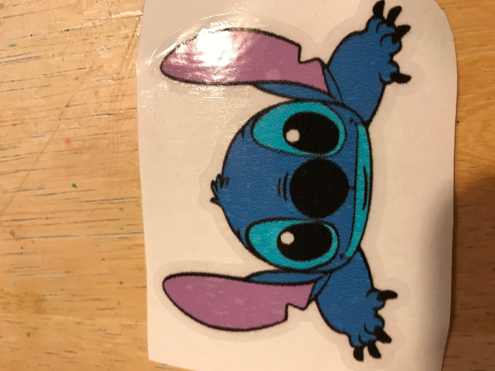
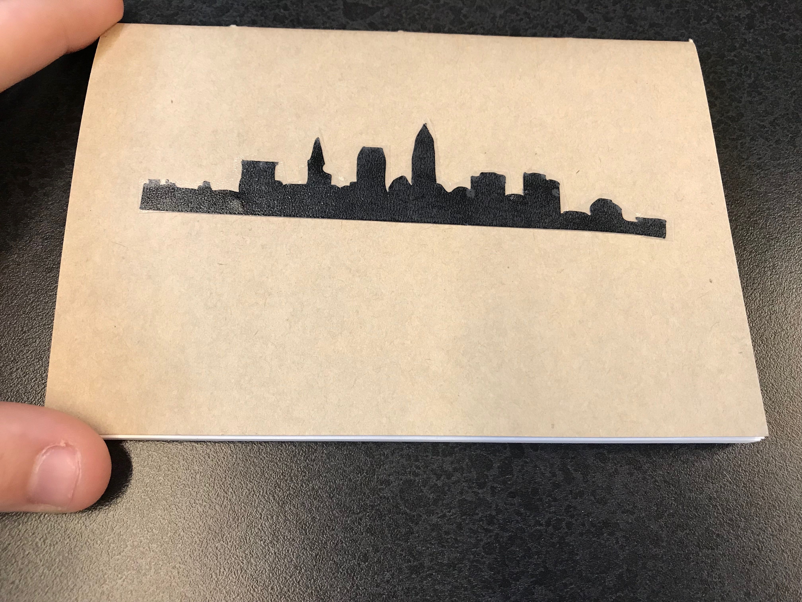
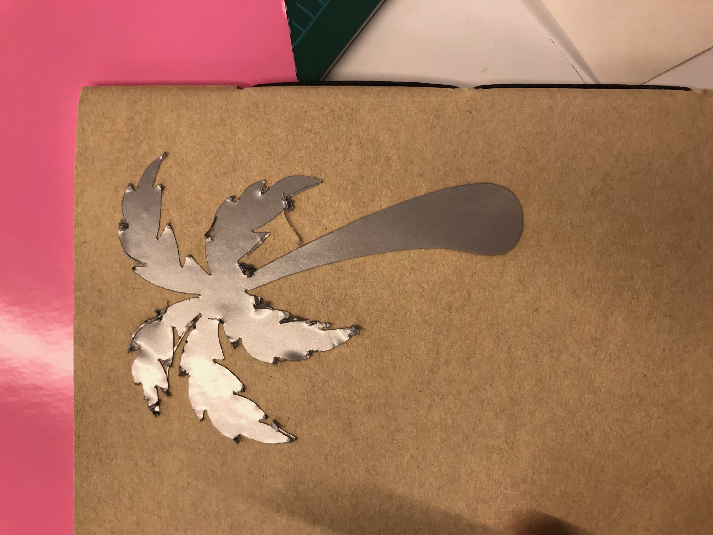

Rotation 6: Vinyl,CNC Milling, Casting and Composites
Project Description:
The first project of this rotation was to make a multi color sticker on the Roland 540i printer. I made a sticker of Stitch that I put on my laptop. I made this sticker because Stitch is one of my favorite Disney Characters and the picture I used was very cute. The most challenging part of the process was getting the outline pink and contour section correct. I learned that the possiblilities are endless with ideas for stickers. I loved looking at my classmates stickers and seeing their ideas of creativity.

The second project of this rotation was to make two single colored viynl stickers on the Roland Gs - 24. I made a black skyline of Cleveland and a silver Palm Tree. I created these stickers by picking a simple outline and putting it into the Roland cutting studio to cut it. I made the skyline of Cleveland because I am from here and I like it. I made the palm tree because it reminds me of the beach, which is my favorite place to be. When I created the notebook I wanted to have where I'm from on one side and where my favorite place other than home is on the other side. The most challenging part was picking an outline simple enough to not rip the paper because of too much detail.


The third project of this rotation is to create a 3D object to be milled out on the MDX40A milling machine and then made into a mold. My mold is of a penguin with its arms out.